记录与排版
让你的碎碎念变好看
- 多种模板，满足不同审美与记录场景
- 支持多图记录，丰富生活叙事
- 语音输入，降低记录门槛
- 心情标记留住此刻感受；密码锁保护记录隐私
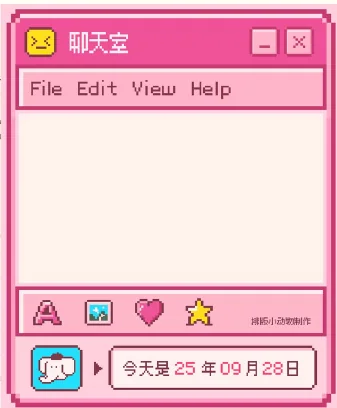
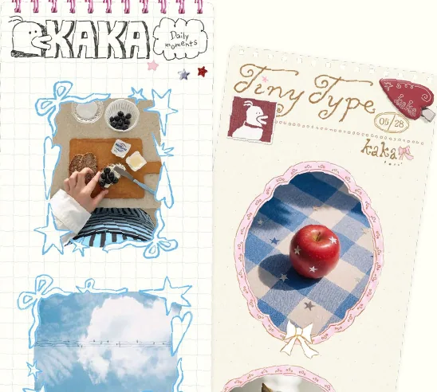
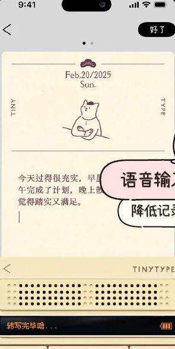
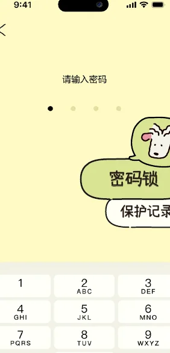
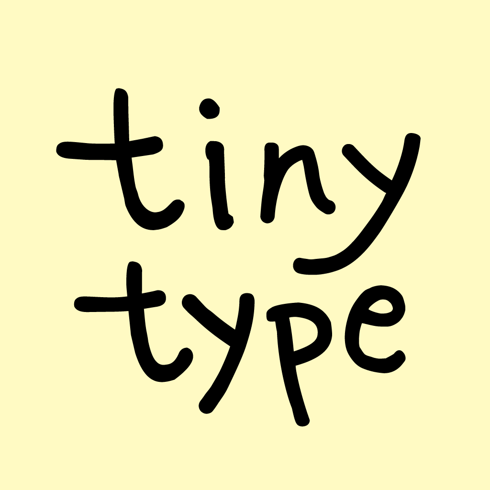
一群温暖的陪你记录的小动物
品牌介绍
用小动物模板，把日常文字变成好看的生活记录。
核心用户以 18–24 岁、一线城市年轻女性为主
产品功能
从随手记录、月刊回看，到写信寄给未来或与笔友通信，把生活片段好好收起来。
让你的碎碎念变好看




把记录装订成一本月刊
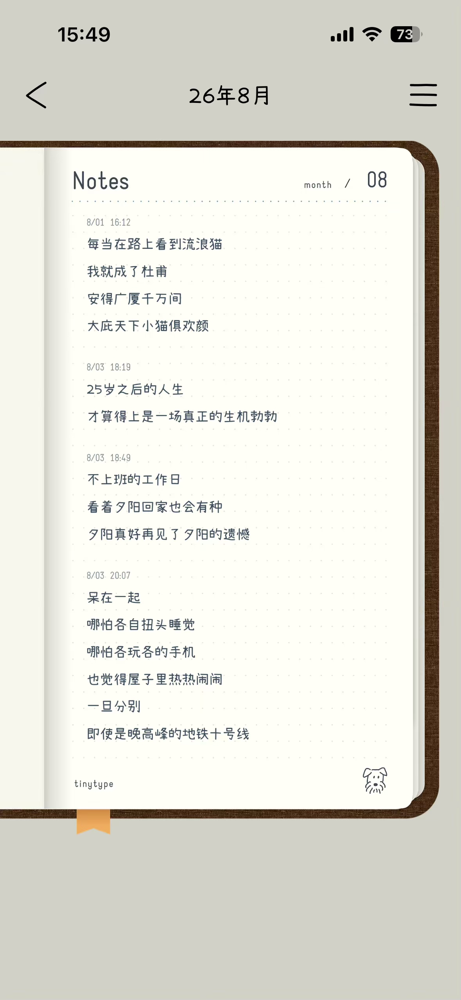
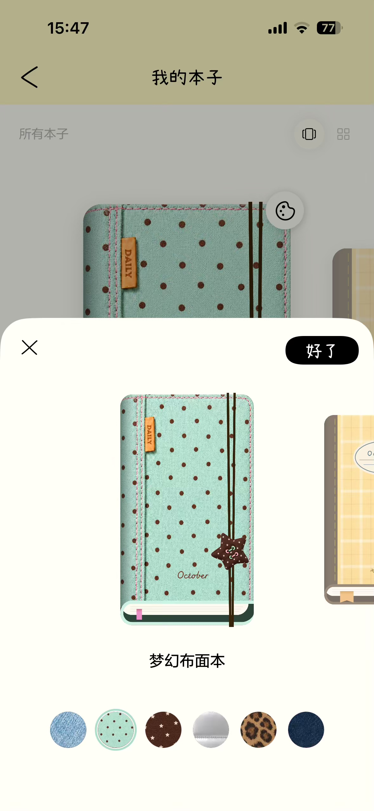
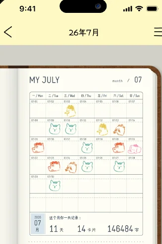
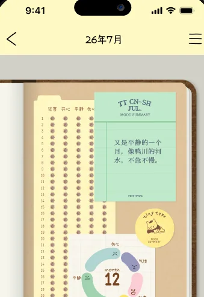
让记录开始穿越时间
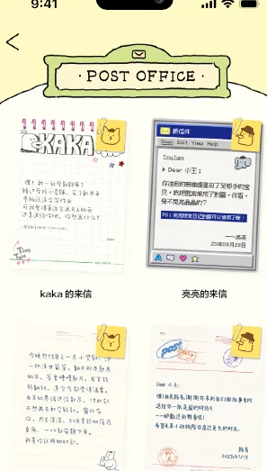
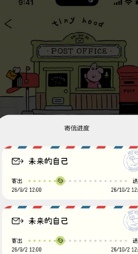
小动物陪你一起养成好习惯
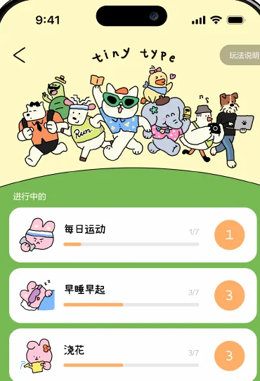
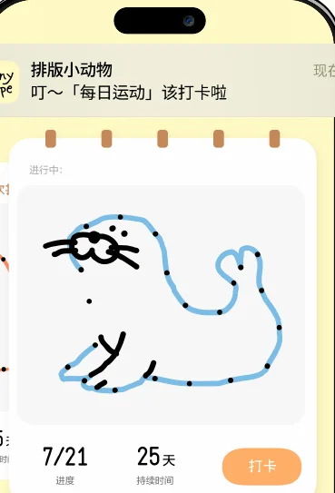
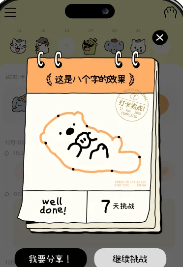
和喜欢的人互相寄信
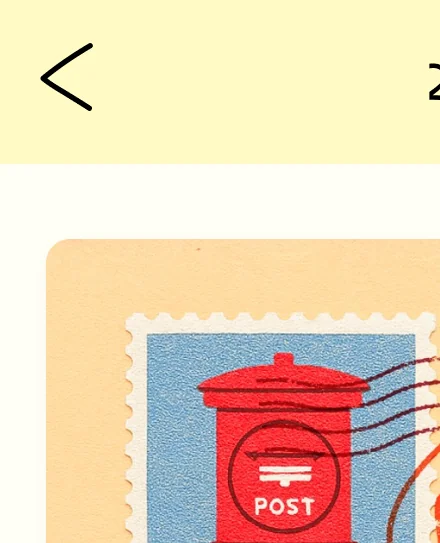
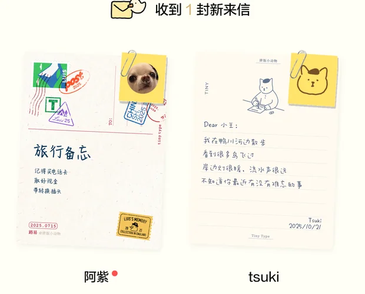
合作模式
本次仅合作视频硬广，以流量置换支持你的创作。
小红书 ＋ 抖音
希望同一内容同步发布至两个平台。采用非报备流量置换；每次投流，小红书后台均会通知。
带上话题 #排版小动物，正文文案字数不限。
IP 角色体系
小提示：点击小动物头像，即可翻面查看 IP 性格与适用场景
内容灵感
优先合作硬广口播。从情绪、审美与学习需求切入，把青春、友情、心事与读书日常，讲成具体的产品推荐。
青春记忆、友情、少女心事，都从一件真实小事讲起。
记录 · 小动物来信 · 笔友通信用同一段文字的排版前后对比，直接展示模板与操作。
风格模板 · 多图记录 · 文字卡片读书理解、备考复盘、学习打卡，把方法落到一次真实演示。
读书笔记 · 每日打卡 · 日记回看真实困扰 → 前 25 秒内露出产品 → 口播讲解 + 实机演示 → 使用感受 → 邀请开始记录
70% 明确介绍产品 · 30% 真实场景案例按创作者类型展示；展开重点口播方向，查看对应案例与拍摄提纲。
灵感内容整理中，稍后刷新即可查看。